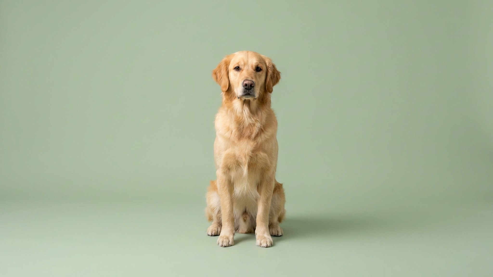

Питомец грызёт провода: 5 причин и как защитить дом

22 июля 2026 · 3 минуты чтения · Безопасность · Быт · Кошки · Собаки
Укушенный провод от зарядки — мелкая неприятность. Перегрызенный кабель под напряжением — уже реальная опасность для питомца. Летом техники в доме прибавляется: вентиляторы, дополнительные зарядки, удлинители. Провода грызут и котята, и щенки, и взрослые животные — и каждый раз по своей причине. Разберём, почему это происходит, и как убрать риск без постоянного надзора.
🐾 Питомец ведёт себя странно?
AnimaLife расшифрует поведение кошки и собаки и подскажет, что делать. Попробуйте бесплатно прямо в мессенджере.
Открыть в Telegram → Открыть в MAX →
Почему питомец тянется к проводам: 5 причин
Прежде чем убирать провода, важно понять мотив — от него зависит, что поможет надолго, а что только на время.
- Скука и недостаток активности. Самая частая причина у кошек и собак любого возраста. Провод — доступная движущаяся «игрушка» со стимулирующей текстурой.
- Смена зубов у щенков и котят. В возрасте 3–6 месяцев молочные зубы сменяются постоянными. Дёсны зудят — питомец ищет, что погрызть. Провод подходит по жёсткости и форме.
- Стресс и тревога. Переезд, новый человек в доме, изменение распорядка — жевание успокаивает. Животное может переключаться на провода именно в тревожные периоды.
- Привлечение внимания. Если однажды хозяин отреагировал эмоционально — подбежал, заговорил, взял на руки — питомец запомнил: провод = контакт с человеком.
- Текстура и вкус. Некоторые провода пахнут резиной или пластиком — это само по себе привлекает животных с активным обонянием.
Как обезопасить дом: убрать риск физически
Поведение меняется медленно, а провод под напряжением опасен прямо сейчас. Поэтому сначала — физическая защита, параллельно — работа с причиной.
- Кабель-каналы и пластиковые короба закрывают провода вдоль плинтусов — и выглядят аккуратно, и недоступны для зубов.
- Горькие спреи (продаются в зоомагазинах) наносятся на провода и отпугивают большинство животных неприятным вкусом. Нужно обновлять каждые 2–3 дня.
- Поднять провода выше уровня досягаемости: используйте крепления на стене, стяжки, подвес.
- Зарядки и удлинители, которые не используются, обесточивать и убирать в закрытый ящик или шкаф.
- Гофрированная трубка или защитная оплётка из металлополимера — надёжнее всего там, где провода не убрать.
Как перенаправить поведение: работа с причиной
Убрать провода из доступа — половина дела. Если не дать альтернативу, питомец найдёт другой объект для жевания.
- Жевательные игрушки подходящей жёсткости: для щенков — резиновые прорезыватели, для кошек — плотные верёвочные или латексные игрушки. Меняйте их между собой, чтобы не надоедали.
- Больше активности: для кошек — охотничьи игры с удочкой 2 раза в день по 10–15 минут; для собак — прогулки с нюхательными задачами, тренировка команд.
- Не ругайте постфактум — животное не свяжет наказание с проводом, если прошло больше нескольких секунд. Только перенаправление в моменте.
- Если питомец тянется к проводу в вашем присутствии — спокойно переключите на игрушку и поощрите интерес к ней.
Когда стоит показать питомца специалисту
Иногда тяга к жеванию несъедобного — сигнал, выходящий за пределы скуки или возраста. Запишитесь к ветеринару или зоопсихологу, если:
- Питомец грызёт провода и другие несъедобные предметы навязчиво, не реагируя на переключение.
- Поведение началось внезапно у взрослого животного без видимых изменений в жизни.
- Одновременно изменился аппетит, активность или общее состояние.
Зоопсихолог поможет найти поведенческую причину, ветеринар исключит физиологическую. Оба варианта решаемы — главное не ждать, пока ситуация закрепится.
Материал носит информационный характер и не заменяет очную консультацию ветеринара.
🐾 Понравился разбор?
Подпишитесь на канал — каждый день разбираем по одному тревожному симптому у кошек и собак: что в пределах нормы, а когда пора к врачу. Подпишитесь, чтобы не пропустить разбор, который может спасти здоровье вашего питомца.
← Все статьи · Открыть AnimaLife в Telegram · RSS